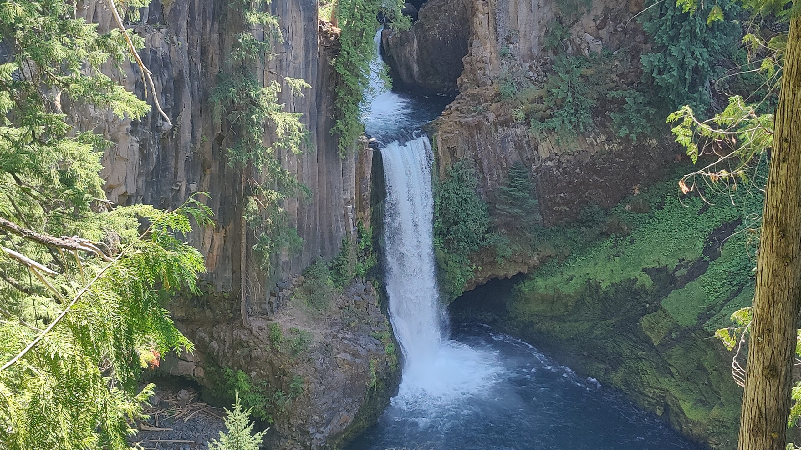

Introducing the FJ13.
The only way to reach the most remote access points of volcanic formations, secluded waterfalls, and the least-visited natural features of the Pacific Northwest is by way of this beast — the FJ13.
Acquired in Bend, Oregon. Built for the back roads.
FJ13 came home to us in Bend, Oregon in 2025. It's more than a vehicle — it's the machine that carries us into remote places, over rough roads, and toward the stories we want to share.
The Toyota FJ Cruiser platform strikes a balance we love: it's capable enough off-road to earn trust on forest service roads and washboard two-tracks, but comfortable and reliable enough to eat the long highway miles between trailheads.
Future-proofing FJ13 for remoter corners.
Several much-needed projects and upgrades are in the works to maximize FJ13's ability to reach the unique locations where our content originates.
Help us keep the FJ roaring down dusty back roads.
Your contribution fuels our adventures, covers repairs, and invests in the gear that turns every mile into real, field-tested content.